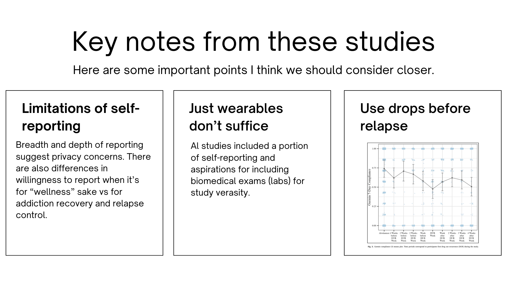

Research
Area


Brown is a part of an Ithaka S+R cohort of colleges and universities in a study to research how information literacy frameworks can be adapted or revised to reflect AI-driven transformation. We will be conducting qualitative research to understand the changing information practices and needs of students and instructors. The goal is to identify how libraries and other university units can weave AI literacy into their existing operations.